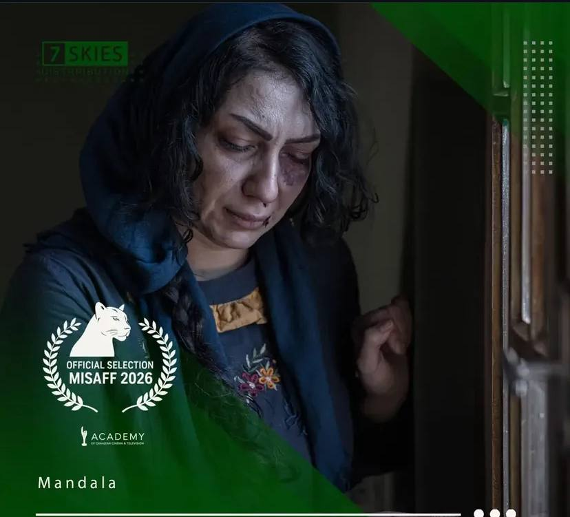

فیلم کوتاه «ماندالا» به کارگردانی بهنام خسروی به بخش رسمی جشنواره بینالمللی MISAFF (Mosaic International South Asian Film Festival) در کانادا راه یافت. این جشنواره در فهرست جشنوارههای واجد شرایط برای Canadian Screen Awards معرفی شده است؛ ویژگیای که راهیابی به آن را برای هر اثر مستقل، از جمله «ماندالا»، اهمیتی دوچندان میبخشد و آن را از یک نمایش صرف جشنوارهای فراتر میبرد.
پیش از این، «ماندالا» در دهمین دوره جشنواره بینالمللی فیلم TINFF (Toronto International Nollywood Film Festival) نیز حضور داشت و جایزه بهترین فیلم کوتاه تجربی این دوره را دریافت کرد. TINFF نیز از جشنوارههای واجد شرایط برای Canadian Screen Awards و Telefilm Canada است؛ به این ترتیب «ماندالا» برای دومین بار در یک بازه کوتاه، در یکی از رویدادهای مورد تایید نهادهای رسمی سینمایی کانادا حاضر میشود؛ اتفاقی که کمتر برای یک فیلم کوتاه مستقل ایرانی در چنین فاصله زمانی کوتاهی تکرار میشود.
جشنواره MISAFF با محوریت معرفی سینمای جنوب آسیا و آثار مستقل بینالمللی برگزار میشود و هر ساله میزبان فیلمهای کوتاه و بلند از فیلمسازان کشورهای مختلف است. این جشنواره تلاش میکند تا از طریق نمایش آثار متنوع، پلی میان فرهنگهای گوناگون و جامعه سینمای مستقل کانادا برقرار کند و فرصتی برای فیلمسازانی فراهم آورد که داستانهایشان کمتر در چرخههای اصلی توزیع دیده میشود. راهیابی به بخش رسمی چنین رویدادی، معمولاً به معنای عبور از میان مجموعه گستردهای از آثار رقیب ارسالی از سراسر جهان است؛ فرآیندی که هیئت انتخاب جشنواره را وادار میکند تا از میان صدها اثر، تنها معدودی را برای نمایش عمومی برگزیند.
اهمیت راهیابی به جشنوارهای واجد شرایط Canadian Screen Awards در آن است که چنین جشنوارههایی معمولاً تحت نظارت و معیارهای مشخصی از سوی نهادهای رسمی سینمایی کانادا فعالیت میکنند؛ معیارهایی که به آثار راهیافته و برگزیده این جشنوارهها، امکان مطرحشدن در سطحی رسمیتر از یک جشنواره معمولی را میدهد. به همین دلیل، حضور مستمر «ماندالا» در چنین رویدادهایی، صرفاً یک نمایش دیگر نیست، بلکه بخشی از مسیری است که میتواند این فیلم کوتاه ایرانی را در معرض دید بخش رسمیتری از صنعت سینمای کانادا قرار دهد.
با این حضور تازه، «ماندالا» تاکنون در مجموع ۸ جشنواره بینالمللی به نمایش درآمده است؛ روندی که نشان میدهد این فیلم کوتاه ایرانی توانسته با مضمون خود، توجه داوران و مخاطبان را در جغرافیاهای گوناگون، از آسیا و اروپا گرفته تا آمریکای شمالی و اقیانوسیه، جلب کند. این پراکندگی جغرافیایی حضور جشنوارهای، خود گواهی بر جهانشمولبودن مضمون و روایت این اثر کوتاه است؛ ویژگیای که کمتر در آثار مستقل با بودجه محدود دیده میشود.
عوامل اصلی فیلم عبارتاند از بهنام خسروی در مقام کارگردان، نویسنده و تهیهکننده، و کمپانی سوناسکایز به عنوان مجری طرح و پخش بینالملل؛ کمپانیای که نقش کلیدی در معرفی «ماندالا» به جشنوارههای مختلف بینالمللی ایفا کرده است. علاقهمندان و رسانههایی که مایل به پیگیری بیشتر اخبار پخش بینالمللی این فیلم هستند میتوانند از طریق کانالهای ارتباطی کمپانی سوناسکایز در جریان تازهترین رویدادهای مرتبط با «ماندالا» قرار بگیرند.
تیم مستر شورتفیلم ادامه مسیر «ماندالا» در جشنواره MISAFF و رویدادهای پیشرو را در همین بخش وبلاگ دنبال و منتشر خواهد کرد؛ از جمله زمان دقیق نمایش فیلم در برنامه جشنواره و هر نتیجه احتمالی که از دل داوری این دوره از MISAFF بیرون بیاید.